<!doctype html>
<html lang="pt-BR"><head><meta charset="utf-8"><title>Banner 5 x 3 (painel intercalado) — Melhores do Ano AV 2026</title>
<!-- Banner para impressão: proporção 5 x 3.
     Painel de fotos: 4 colunas, cada uma com um "Melhores do Ano AV 2026" e um "Associação / Volvo",
     colunas alternando um pouco mais para cima e mais para baixo. Tudo em branco.
     Versões (no endereço): ?v=amarelo (AV 2026 em amarelo), ?v=raios (brilho suave atrás de cada selo), ?v=estrela (Melhores do Ano dentro da estrela 3D), ?v=linha (linha dourada embaixo de cada selo, alinhado, fundo em degradê do meio para fora). -->
<link href="https://fonts.googleapis.com/css2?family=Inter:wght@800;900&display=swap" rel="stylesheet">
<style>
  * { margin: 0; padding: 0; box-sizing: border-box; }
  html, body { width: 2000px; height: 1200px; overflow: hidden; background: #062a33; color: #fff; }
  .art { position: relative; width: 2000px; height: 1200px; overflow: hidden;
    background:
      radial-gradient(60% 60% at 50% 45%, rgba(40,150,165,.35), transparent 70%),
      linear-gradient(160deg, #1a6474 0%, #0e4351 40%, #08303b 72%, #041c24 100%); }
  .beam { position: absolute; top: -300px; width: 220px; height: 1900px; transform: rotate(32deg);
    background: linear-gradient(90deg, transparent, rgba(160,235,245,.07), transparent); }
  .vignette { position: absolute; inset: 0; background: radial-gradient(ellipse at center, transparent 55%, rgba(2,14,18,.45)); }

  .item { position: absolute; width: 400px; height: 250px; margin: -125px 0 0 -200px; z-index: 2;
    display: flex; flex-direction: column; align-items: center; justify-content: center; text-align: center; }
  /* Melhores do Ano AV 2026 */
  .mda b { display: block; font-family: 'Inter', Arial, sans-serif; font-weight: 900; text-transform: uppercase; font-size: 58px; line-height: .98; letter-spacing: -.01em;
    text-shadow: 0 4px 16px rgba(0,0,0,.3); }
  .mda b.av { margin-top: 6px; }
  .amarelo .mda b.av { color: #f2b632; }
  /* Associação / Volvo (recortado do logo oficial) */
  .av2 img { display: block; height: 54px; filter: drop-shadow(0 3px 10px rgba(0,0,0,.3)); }
  .av2 img + img { margin-top: 18px; }

  /* ?v=raios: só um brilho suave atrás de cada selo (sem linhas de raio aparentes) */
  .ray { position: absolute; width: 680px; height: 680px; margin: -340px 0 0 -340px; z-index: 1; pointer-events: none; border-radius: 50%;
    background: radial-gradient(circle, rgba(255,240,205,.30) 0%, rgba(242,182,50,.16) 30%, rgba(242,182,50,.06) 48%, transparent 66%); }
  .raios .mda b.av, .estrela .mda b.av { color: #f2b632; }

  /* ?v=estrela: "Melhores do Ano AV 2026" dentro de uma estrela dourada em 3D */
  .star3d { position: absolute; width: 450px; height: 450px; margin: -232px 0 0 -225px; z-index: 1;
    filter: drop-shadow(0 0 30px rgba(255,214,110,.45)) drop-shadow(0 26px 40px rgba(0,0,0,.5)); }
  .star3d svg { width: 100%; height: 100%; display: block; }
  .estrela .mda b { font-size: 40px; text-shadow: 0 2px 0 rgba(70,38,2,.9), 0 0 3px rgba(50,26,0,.9), 0 0 14px rgba(40,20,0,.8), 0 0 26px rgba(40,20,0,.5); }
  .estrela .mda b.av { color: #fff; }

  /* ?v=linha: selos alinhados, uma linha dourada embaixo de cada um e fundo em degradê do meio para fora */
  .linha .art, .art.linha { background: radial-gradient(75% 85% at 50% 50%, #237f91 0%, #12566a 30%, #0b3c49 60%, #041c24 100%); }
  .linha .beam, .raios .beam { display: none; }
  .ln { display: block; width: 270px; height: 4px; margin-top: 26px; border-radius: 2px;
    background: linear-gradient(90deg, transparent, #f2b632 20%, #ffe2a0 50%, #f2b632 80%, transparent); }
</style></head>
<body><div class="art" id="art">
  <div class="beam" style="left:300px"></div><div class="beam" style="left:900px"></div><div class="beam" style="left:1500px"></div>
  <div class="vignette"></div>
</div>
<script>
  const q = new URLSearchParams(location.search);
  // ?z=2 aumenta a arte (para gerar a imagem em alta resolução)
  const z = parseFloat(q.get('z'));
  if (z) { document.documentElement.style.zoom = z; document.documentElement.style.overflow = 'hidden'; }
  const v = q.get('v') || 'amarelo';
  document.getElementById('art').classList.add(v);

  const MDA = '<b>Melhores</b><b>do ano</b><b class="av">AV 2026</b>' + (v === 'linha' ? '<i class="ln"></i>' : '');
  const AV2 = '' + (v === 'linha' ? '<i class="ln"></i>' : '');
  // estrela dourada facetada (mesma da capa da apresentação), usada na versão ?v=estrela
  const STAR = (() => {
    const C = 300, R = 285, r = 128, L = [-0.55, -0.83];
    const P = (a, rad) => [C + rad * Math.cos(a * Math.PI / 180), C + rad * Math.sin(a * Math.PI / 180)];
    const lo = [96, 56, 6], hi = [255, 246, 205];
    const col = t => 'rgb(' + lo.map((v, i) => Math.round(v + (hi[i] - v) * t)).join(',') + ')';
    let facets = '', outline = [];
    for (let k = 0; k < 5; k++) {
      const a = -90 + 72 * k, O = P(a, R), Ia = P(a - 36, r), Ib = P(a + 36, r);
      outline.push(Ia, O);
      for (const I of [Ia, Ib]) {
        let nx = -(O[1] - I[1]), ny = O[0] - I[0];
        const mx = (O[0] + I[0]) / 2 - C, my = (O[1] + I[1]) / 2 - C;
        if (nx * mx + ny * my < 0) { nx = -nx; ny = -ny; }
        const n = Math.hypot(nx, ny), t = Math.max(0, Math.min(1, .5 + .55 * ((nx / n) * L[0] + (ny / n) * L[1])));
        facets += '<path d="M' + C + ' ' + C + 'L' + I.map(v => v.toFixed(1)) + 'L' + O.map(v => v.toFixed(1)) + 'Z" fill="' + col(t) + '"/>';
      }
    }
    const pts = outline.map(p => p.map(v => v.toFixed(1)).join(' ')).join(' L');
    return '<svg viewBox="0 0 600 600"><defs><radialGradient id="sg" cx=".42" cy=".38" r=".7"><stop offset="0" stop-color="#fff" stop-opacity=".45"/><stop offset=".35" stop-color="#fff" stop-opacity="0"/></radialGradient></defs>' +
      facets + '<path d="M' + pts + 'Z" fill="url(#sg)"/><path d="M' + pts + 'Z" fill="none" stroke="#ffe9a8" stroke-width="3" stroke-linejoin="round" opacity=".85"/></svg>';
  })();
  // 4 colunas; cada coluna tem um de cada, e as colunas alternam: uma mais para cima, a outra mais para baixo
  const cols = [250, 750, 1250, 1750];
  let h = '';
  cols.forEach((x, i) => {
    const up = i % 2 === 0;
    // na versão com linha tudo fica alinhado em duas linhas retas; nas outras, colunas em zigue-zague
    const y1 = v === 'linha' ? 330 : (up ? 300 : 400), y2 = v === 'linha' ? 850 : y1 + 520;
    const first = up ? ['mda', MDA] : ['av2', AV2], second = up ? ['av2', AV2] : ['mda', MDA];
    [[first, y1], [second, y2]].forEach(([it, y]) => {
      if (v === 'raios') h += `<div class="ray" style="left:${x}px;top:${y}px"></div>`;
      if (v === 'estrela' && it[0] === 'mda') h += `<div class="star3d" style="left:${x}px;top:${y}px">${STAR}</div>`;
      h += `<div class="item ${it[0]}" style="left:${x}px;top:${y}px">${it[1]}</div>`;
    });
  });
  document.getElementById('art').insertAdjacentHTML('beforeend', h);
</script>
</body></html>
